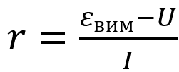

Впишіть ваш клас
Впишіть ваше прізвище та ім'я
Експеримент
1 Відкрийте симуляцію за покликанням:
2Ознайомтеся з середовищем для моделювання
3Складіть електричне коло за накресленою вами схемою 1

4Встановіть внутрішній опір джерела струму на одну поділку регулятором 2 (див. мал.)
5Для забезпечення реалістичності експерименту встановіть опір з'єднувальних провідників, трохи посунувши регулятор 1 (див. мал.)

6Встановіть опір резистора на 44 Ом
Щоб змінити опір резистора, клікніть його мишкою.

7Виміряйте напругу на клемах джерела струму у випадку, коли ключ розімкнено
(отримане значення відповідатиме ЕРС джерела струму – εвим). Отримане значення запишіть до таблиці.
8Замкніть ключ і виміряйте силу струму I в колі та напругу U на зовнішній ділянці кола
Отримані значення запишіть до таблиці.
9Змініть значення опору резистора та виміряйте силу струму I в колі та напругу U на зовнішній ділянці кола
Отримані значення запишіть до таблиці в рядок № 2.
10Повторіть п.9, щоразу записуючи отримані значення до таблиці в рядки 3, 4, 5
| № досліду | ЕРС εвим |
Сила струму I, А |
Напруга U, В |
Внутрішній опір r, Ом |
Середнє значення rсер, Ом |
Результати вимірювань: r = rсер ± ∆r, Ом ε = εвим ± ∆ε, В |
| 1 | ||||||
| 2 | ||||||
| 3 | ||||||
| 4 | ||||||
| 5 |
Опрацювання результатів експерименту
1. Скориставшись формулою, визначте внутрішній опір r джерела струму за результатом кожного досліду та середнє значення внутрішнього опору (rсер):
Результати занесіть до таблиці.
2. Оцініть абсолютну похибку вимірювання ЕРС джерела струму:
∆ε = ∆εприл + ∆εвип,
де ∆εприл – похибка вольтметра (див. Додаток 2);
∆εвип – випадкова похибка (похибка відліку), яка в даному випадку дорівнює половині ціни поділки шкали вольтметра.
У нас вольтметр цифровий, тому візьміть значення:
∆εприл = ∆εвип = 0,01 В
Результати занесіть до таблиці.
3. Оцініть абсолютну (∆r) та відносну (εr) похибки вимірювання внутрішнього опору джерела струму:

Результати занесіть до таблиці.
4. Округліть результати, скориставшись правилами округлення (абсолютну похибку завжди округлюють до однієї значущої цифри із завищенням, а результат вимірювання – до величини розряду, що залишився в абсолютній похибці після округлення), і подайте результати вимірювання ЕРС і внутрішнього опору у вигляді:

Результати занесіть до таблиці.
Аналіз експерименту та його результатів
Проаналізуйте експеримент і його результати. Сформулюйте висновок, у якому зазначте:
1) які фізичні величини ви вимірювали; значення якої величини було встановлено шляхом прямих вимірювань, а якої – непрямих;
2) якими є результати вимірювань;
3) вимірювання якої величини дає найбільшу похибку.